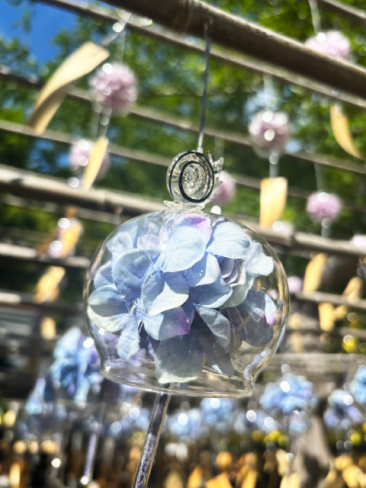
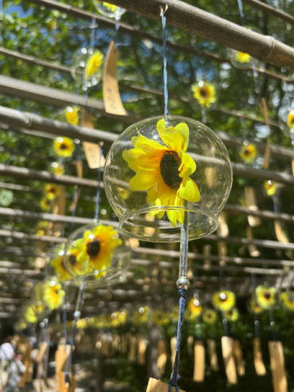
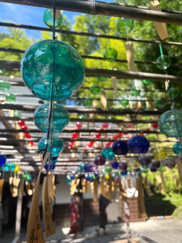
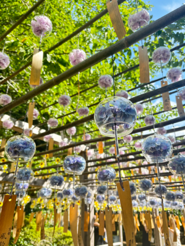
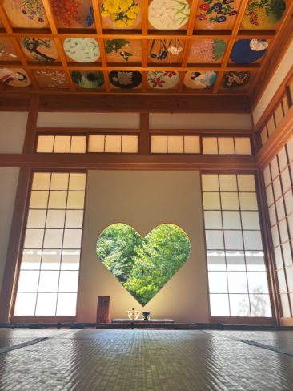
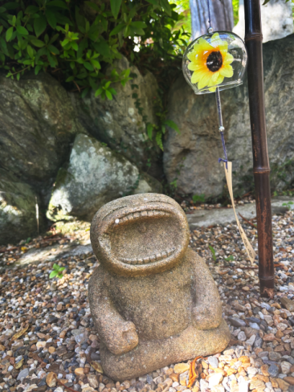

最新の情報は 公式サイトのツアーページ をご覧ください。
正寿院 風鈴まつり送迎プラン 2026【京都駅・宇治駅発着】
本ツアーの募集は終了いたしました
＜お問合せフォームはこちら▶＞
＜MKトラベルTOPはこちら▶＞
＜おすすめツアー一覧はこちら▶＞
★正寿院の拝観を含む、宇治田原を満喫できるプランを通年販売しております。
詳細はタクシーで快適♪宇治田原を満喫！正寿院と寺社巡りの旅をご確認ください。
風鈴まつり期間中(6/1～9/30)の月木金／土日祝運行！
※8/17は終日拝観中止となる為、ツアーも除外日となります
【乗降場所】
| 平日 | 京阪宇治駅・JR宇治駅 |
| 土日祝 | 京都駅八条口 ／ 京阪宇治駅・JR宇治駅 |
【旅行代金】
| 乗降場所 | （税込み・1名様） |
| 京都駅八条口MKタクシー乗り場 | 7,800円 |
| 京阪宇治駅／JR宇治駅 | 6,800円 |
※拝観時はドライバーは同行いたしません。
※大人・小人同額となります。
※旅行代金には拝観料(1,000円)が含まれておりません。
当日お寺の拝観料受付にて直接お支払お願いします。
| 現在のお申込み状況(最少催行人数4名) | |||
| 平日 | 終了 | ||
| 土日祝 | 終了 | ||
※1名様からご予約いただけますが4名様以上で運行します。
※4名以上のグループであれば出発日の追加や午後からの運行も可能です。
※少人数での送迎をご希望の方は貸切で再現できる場合もございますのでお気軽にご相談ください♪お問合せフォームはこちら！
※9/21～23・9/25は中止になりました。最新のお申込み状況はお問い合わせください
★「風鈴まつり」期間外に正寿院へお出かけ希望の方はこちら
正寿院 風鈴まつりへお出かけ！🎐
“京都の風鈴寺”として人気の高い 正寿院 の「風鈴まつり」へ、MKタクシーでらくらくアクセス！
MKタクシーのツアーなら、京都駅八条口・京阪宇治駅・JR宇治駅から正寿院まで快適送迎。
暑い夏でも移動がスムーズなので、初めての方やおひとり参加の方にもおすすめです。
創建800年以上の歴史を持ちながら、SNS映えスポットとしても話題の正寿院。
風鈴まつり期間中は、境内いっぱいに2,000個を超える風鈴が飾られ、まるで“風鈴の森”のような幻想的な空間に包まれます。
茶畑や山々、青空を背景に響く涼やかな風鈴の音色。
夏の京都でしか味わえない、癒しのひとときをお楽しみください。
| ✨おひとり参加も大歓迎！✨ |
| 毎年、おひとり様でご参加されるお客様も多数！ 「自分のペースでゆっくり楽しめた」 「写真撮影を満喫できた」 「静かな夏の京都を感じられた」 など、嬉しいお声をたくさんいただいています。 風鈴の音に癒されながら、あなただけの特別な夏時間を過ごしてみませんか？🎐 |
【行程】平日プラン（月・木・金）
乗降場所は【京阪宇治駅】【JR宇治駅】をご選択いただけます。
| 時間 | 場所 |
| 10:00 | 京阪宇治駅(集合・出発) |
| 10:10 | JR宇治駅(集合・出発) |
| 10:40 | 正寿院 |
| 11:50 | お茶の郷 木谷山 |
| 12:30 | JR宇治駅(解散) |
| 12:40 | 京阪宇治駅(解散) |
※渋滞等で、行程の入替や、予定通りの滞在時間をお取りすることができない場合がございます。予めご了承ください。
【行程】休日プラン（土・日・祝）
乗降場所は【京都駅八条口】【京阪宇治駅】【JR宇治駅】をご選択いただけます。
| 時間 | 場所 |
| 8:30 | 京都駅八条口MKタクシーのりば(集合・出発) |
| 9:15 | 京阪宇治駅(集合・出発) |
| 9:20 | JR宇治駅(集合・出発) |
| 9:50 | 正寿院 |
| 11:00 | お茶の郷 木谷山 |
| 11:50 | JR宇治駅(解散) |
| 11:55 | 京阪宇治駅(解散) |
| 12:35 | 京都駅八条口(解散) |
※渋滞等で、行程の入替や、予定通りの滞在時間をお取りすることができない場合がございます。予めご了承ください。


2025年 スタッフ撮影


2025年 スタッフ撮影


2025年 スタッフ撮影


お待ち合わせ場所


【MKトラベルLINE公式アカウント】
MKトラベルの新規ツアー情報をLINEでお届けいたします

【各SNSでも京都の情報やツアー情報をお届けしています】


旅行条件
| ツアー番号 | FR0609 |
| 出発地 | ・京都駅八条口MKタクシー乗り場 |
| 添乗員／ガイド | 添乗員：なし（乗務員がその業務を代行いたします） |
| 食事 | 0回 |
| 最少催行人数 | 4名 |
お申込みについてのご注意
※最少催行人数は4名様です。最少催行人員に満たない場合は、旅行の実施を取りやめることがあります。出発の3日前にその旨をご連絡し、お客様から当社がお預かりしている旅行費用の全額をお返しいたします。
※旅行条件・旅行代金は、2026年4月1日現在を基準としています。
※行程および帰着時間は交通事情などにより変更になる場合があります。
※お申込みの前に弊社の募集型企画旅行規約をご確認ください。
★正寿院 風鈴まつりの注意事項は正寿院公式サイトをご確認ください→https://shoujuin.boo.jp/
よくある質問
Q.正寿院への送迎プランは風鈴まつり期間のみの運行ですか？
A.正寿院の拝観を含む、宇治田原を満喫できるプランを通年販売しております。
詳細はタクシーで快適♪宇治田原を満喫！正寿院と寺社巡りの旅をご確認ください。
Q.1名ですが、申し込みできますか？
A.はい。お一人参加の方もたくさんいらっしゃいますので、お気軽にお申し込みください。
Q.別の曜日に行きたい／午後からのプランはありますか？
A.風鈴まつり期間中の「月・木・金 ／ 土・日・祝」の運行とさせていただいておりますが、4名以上のグループであれば出発日の追加や午後からの運行も可能です。
少人数での送迎をご希望の方は貸切で再現できる場合もございますのでお気軽にご相談ください♪お問合せフォームはこちら！
Q. 風鈴まつりは雨の日でも楽しめますか？
A.はい、雨の日でもお楽しみいただけます。滑りやすくなりますので、安全のため滑りにくい靴でご参加ください。
Q. 正寿院での滞在時間はどのくらいですか？御朱印をいただく時間はありますか？
A.正寿院での滞在時間は約60分です。ご朱印をお求めの場合も、滞在時間内にお受け取りいただける見込みです。
Q. 境内ではたくさん歩きますか？
A.境内はそれほど広くないため、長い距離を歩くことはありません。ゆっくりと境内をお楽しみいただけます。
本ツアーの募集は終了いたしました
＜お問合せフォームはこちら▶＞
＜MKトラベルTOPはこちら▶＞
＜おすすめツアー一覧はこちら▶＞
・クレジットカード決済
・コンビニ決済（※お電話にてご予約お願いいたします）
お支払方法詳細はこちら
お客様のご都合でご予約をキャンセルされる場合は、すみやかに下記お問合せ先までご連絡ください。
キャンセル料
11日目に当たる日以前
無料
10日目に当たる日以降
20%
7日目に当たる日以降
30%
旅行開始日の前日
40%
旅行開始日の当日
50%
旅行開始後又は無連絡
100%